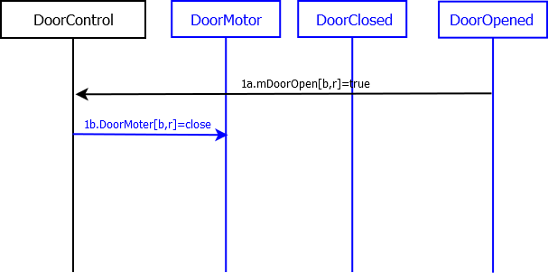
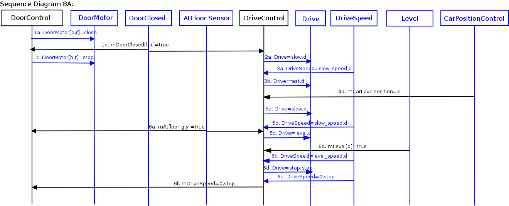
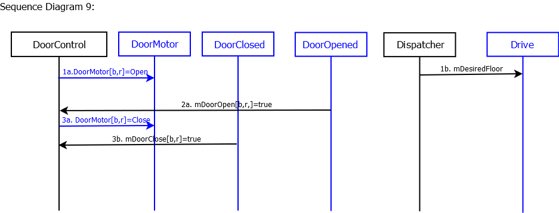

Scenario 7C: Elevator doors close on a hallway.
Author name: Example Solutions
Pre-Conditions:
- At least one Door[b,r] is open.
Scenario:
1. Door[b,r] closes
Post-Conditions:
Sequence Diagram:

Use Case 8: Move Car to Next Floor
Scenario 8A: Elevator moves from {floor f, hallway b} to {floor
g, hallway c} in direction d.
Note: You will want to create other scenarios that involve fast
speed for your elevator, but this is a starting point.
Pre-Conditions:
- Elevator is at floor f, with at least one Door[b,r]
open.
- Drive is stopped.
Scenario:
- Door[b,r] closes.
- Car moves in direction d to floor g.
- Car speeds up to fast speed.
- Car arrives at commit point for floor g.
- Car slows down.
- Car arrives at floor g.
Post-Conditions:
- Door[b,r] is closed.
- Drive is stopped.
- Car is at floor g.
Sequence Diagram:

Use Case 9: Cycle Doors
Scenario 9A: Elevator stops at hallway and doors open.
Dispatcher computes next desired floor just as doors open. Doors
close.
Note: This dispatcher is really dumb and stops at every floor,
in order. It would be much better to stop only at floors with
people on them or that people want to go to.
Pre-Conditions:
- Car is stopped.
- AtFloor[f,b] was last received as True.
- All doors are closed.
Scenario:
1. All doors open.
2. Dispatcher sets next desired floor.
3. All doors close.
Post-Conditions:
- All doors are closed.
- AtFloor[f,b] was last received as True.
- Drive is stop.
Sequence Diagram:
